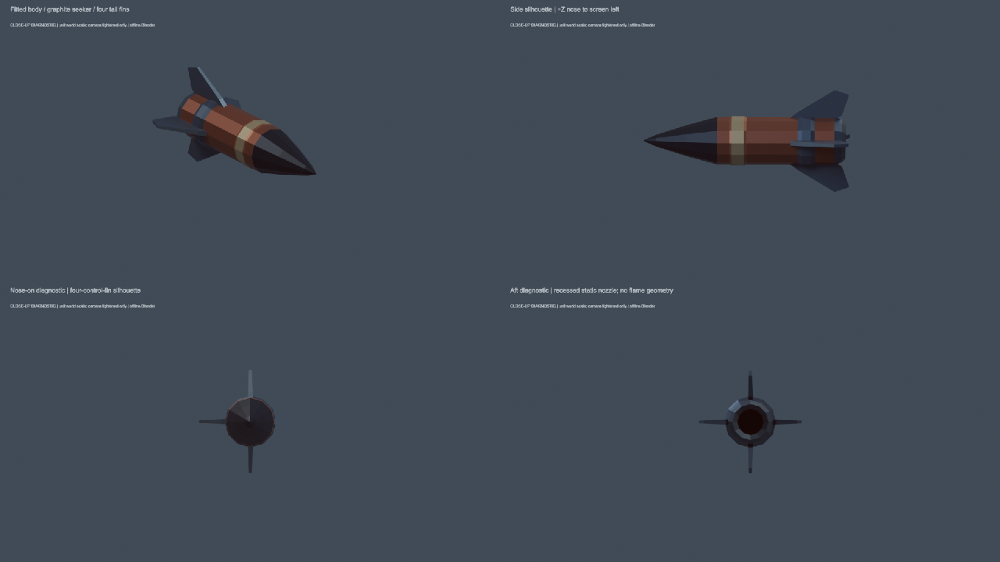
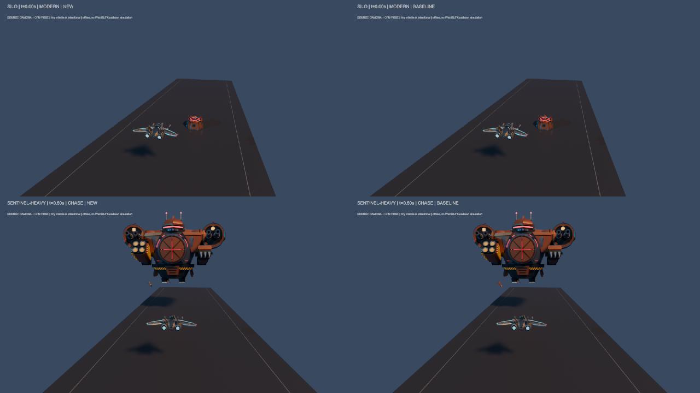
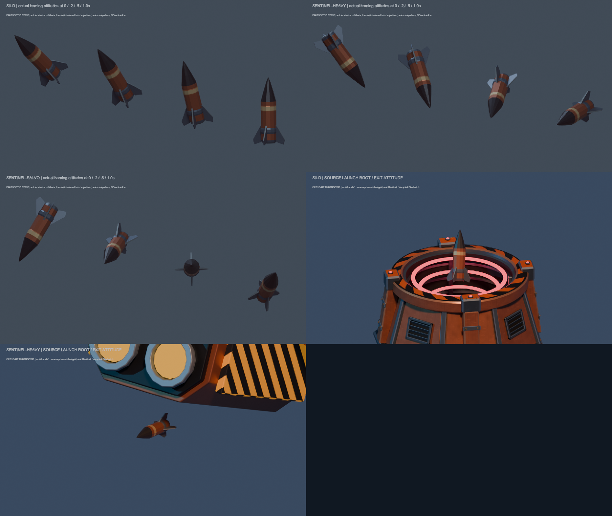
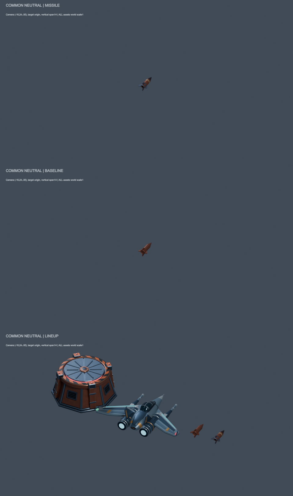

464 triangles · 37,904-byte GLB · one primitive/material · zero textures
Frozen INITIAL / deferred Opus review · 2 construction builds · 0 formal reviews/fix passes
+Z forward / +Y up · source origin retained · exact .84 × .84 × 1.69 world size · 40 copies = 18,560 triangles. One draw is the InstancedMesh contract, not GPU capture.



Actual source velocity matrices: ±axes, oblique, and labeled zero-velocity edge case. Close-up diagnostics.

Source homing attitude samples, plus Silo / Sentinel launcher closeups. Strip translations arranged only for comparison; no animation.

4× NEAREST-NEIGHBOR DIAGNOSTIC CROPS from real full-frame PNGs, not enlarged geometry. Left new / right baseline. Top Silo, bottom incoming heavy.

Full source-camera evidence including baseline matches and the explicitly offscreen late-salvo negative pair.

Common neutral: new and procedural baseline individually at origin, then same-world reference lineup.

Offline Blender / CPU evidence only. No production integration, live WebGL, source particles or receiver verification. Thin head-on fin contrast and small-camera feature loss remain deferred polish limits. Source palette, owned-material disposal recipe and all hashes accompany the assets.